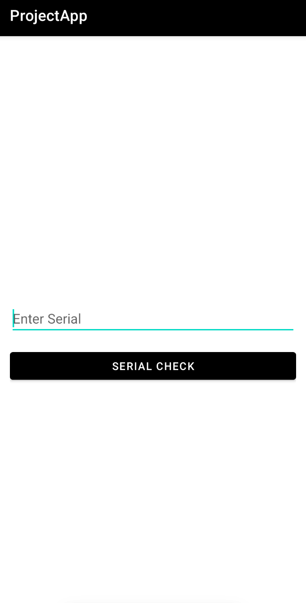
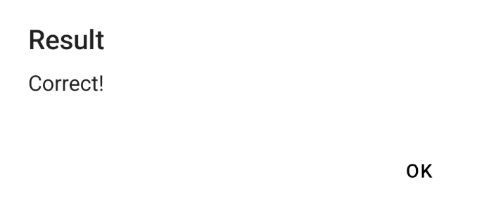

apk 파일을 분석하기 위해서 JADX 를 사용하였다.
만약 설치되어 있지 않다면, 1주차 환경설정 블로그를 보고 오기를 추천한다.
[모바일 애플리케이션 분석] 1주차 - 환경 설정
팀 프로젝트로 안드로이드 모바일 애플리케이션을 분석하는 프로젝트를 선택하였다.이번 1주차에는 분석을 위한 툴을 설치하는 작업을 진행하고자 한다.설치하려는 툴은 ADB, Android Studio, Frida, J
sec-ret.tistory.com
애플리케이션 설치 후 실행
apk 파일을 이용해, 애플리케이션을 설치한 후 실행하였다.
터미널에서 설치하고자 하는 apk 파일이 있는 경로로 이동한다.
그 후 adb install app_name.apk 형식으로 입력을 하면 설치가 된다.
PS D:\My_Projects\Mobile_Analysis\WarGame\ProjectApp.apk> adb install ProjectApp.apk
Performing Streamed Install
Success
이 애플리케이션은 입력을 할 수 있는 창과
SERIAL CHECK 라는 버튼이 있다.
올바른 시리얼을 입력하면 플래그를 출력하는 애플리케이션으로 추측한다.
JADX 로 분석
더 자세히 애플리케이션에 대해 알기 위해서
JADX 를 사용하였다.
<activity
android:name="com.ctf.projectapp.MainActivity"
android:exported="true">
<intent-filter>
<action android:name="android.intent.action.MAIN"/>
<category android:name="android.intent.category.LAUNCHER"/>
</intent-filter>
<meta-data
android:name="android.app.lib_name"
android:value=""/>
</activity>AndroidManifest.xml 를 확인해보니
com.ctf.projectapp.MainActivity 에서 시작한다는 것을 알았다.
이 경로로 가서 MainAcitivity 코드를 살펴보도록 하자.
public void checkSerial() {
if (decodeSecret().equals(this.serialEditText.getText().toString())) {
showAlert("Correct!");
} else {
showAlert("Incorrect!");
}
}시리얼을 체크하는 구문이 있다.
올바른 시리얼이면 Correct!
올바른 시리얼이 아니면 Incorrect! 를 출력한다.
if 문의 조건을 자세히 살펴보면,
if (decodeSecret().equals(this.serialEditText.getText().toString()))decodeSecret() 과 getText() 를 비교하고 있다.
getText() 는 사용자가 입력하는 시리얼 일테니
decodeSecret() 에 담긴 값이 올바른 시리얼일 것이다.
private String decodeSecret() throws Resources.NotFoundException, IOException {
try {
InputStream inputStreamOpenRawResource = getResources().openRawResource(R.raw.secret);
byte[] bArr = new byte[inputStreamOpenRawResource.available()];
inputStreamOpenRawResource.read(bArr);
inputStreamOpenRawResource.close();
return new String(Base64.decode(new String(bArr), 0));
} catch (IOException e) {
e.printStackTrace();
return "";
}
}openRawResource 를 R.raw.secret 에서 가져온 후 base64 로 디코딩을 하여 반환하는 함수이다.
R 은 resource 이기 때문에 리소스에서 raw 로 들어가면 secret.txt 가 있다.
※ com.ctf.projectapp 에 있는 R 에 들어가는 것이 아니다.
애플리케이션 실행 후 플래그 확인
ZmxhZ3toZWxsb19wcm9qZWN0XzRwcH0=secret.txt 에 적힌 값이다.
decodeSecret() 은 이 값을 디코딩한 것이기 때문에
이 값을 디코딩한 값이 플래그이고 입력 시 Correct! 를 출력할 것이다.

Correct! 를 출력함으로
이 값이 플래그라는 것을 알 수 있다.
후기
처음에 apk 를 드래그 하여 설치하는 과정에서 오류가 발생하여
설치하는데 어려움을 겪었다.
만약, 계속 오류가 생긴다면 터미널에서 설치하는 것을 권장한다.
또한 JADX 를 처음으로 열었을 때,
내 생각보다 많은 폴더들이 있어서 내가 원하는 코드를 보기가 찾기가 힘들었다.
시작점을 먼저 찾은 후 분석을 하는 것을 매우 권장한다.